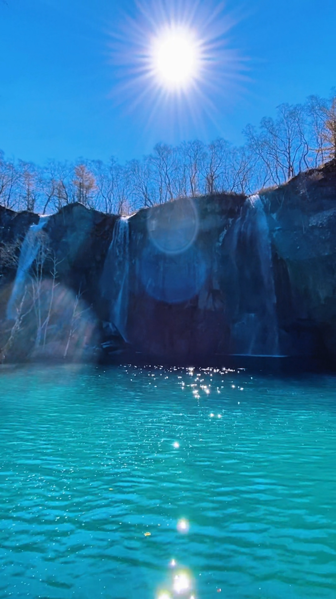

绿渊潭
瀑布冲击形成的深潭，夏季清澈见底，冬季冰瀑冰潭

绿渊潭，是瀑布冲击形成的深潭，夏季清澈见底，冬季冰瀑冰潭。潭水碧绿，周围植被茂密，景色宜人。这里是长白山北坡景区的一处静谧之地，以其独特的色彩和宁静的氛围吸引着无数游客。
🌊 景观特色
绿渊潭的潭水呈现出独特的碧绿色，这种颜色源于水中的矿物质和周围植被的倒影。夏季时，潭水清澈透明，可以清晰地看到水底的岩石和游鱼。冬季时，瀑布结冰形成冰瀑，潭面也会结冰，呈现出别样的冰雪奇观。
🌲 生态环境
绿渊潭周围植被茂密，生长着各种高山植物。这里负氧离子含量高，空气清新，是天然的氧吧。潭边的栈道蜿蜒曲折，为游客提供了观赏的最佳视角。
✨ 游览提示
- 所在位置：位于长白山北坡景区，是北坡经典线路的重要景点。
- 最佳时节：夏季（6-9月）可观赏清澈的潭水和茂密的植被；冬季可欣赏冰瀑和冰潭的奇观。
- 游览方式：沿栈道步行即可到达，路程相对轻松，适合各年龄段游客。
- 注意事项：请沿指定栈道游览，注意安全，不要靠近潭边湿滑区域。
